MOE-Accelerated with Specialized Transformers for Enhanced Real-time Detection
把混合专家（MoE）条件计算引入 YOLO 流水线，按场景复杂度动态分配计算资源， 在 MS COCO 上以 1.62 ms 延迟取得 42.4% AP。
| 标题 | YOLO-Master: MOE-Accelerated with Specialized Transformers for Enhanced Real-time Detection |
|---|---|
| 作者 | Xu Lin、Jinlong Peng、Zhenye Gan、Jiawen Zhu、Jun Liu（前两位同等贡献） |
| 发表 | 未获取（arXiv 预印本，编号 arXiv:2512.23273，2025-12-29） |
| 作者单位 | 1. Tencent Youtu Lab（腾讯优图实验室） 2. Singapore Management University（新加坡管理大学） |
| 论文代码 | github.com/isLinXu/YOLO-Master |
在 MS COCO / PASCAL VOC / VisDrone / KITTI / SKU-110K 五个基准上全面领先同级别实时检测器。
计算预算与网络容量在设计阶段即被固定，与输入内容无关
简单场景计算冗余，复杂场景表征容量不足
为复杂城市场景设计的模型在简单高速路上过参数化，反之容量不足
LLM 研究揭示：不同输入选择性地激活不同的参数子集（稀疏激活），可以同时改善效率与适应性。
本文切入点：把 MoE 条件计算植入 YOLO 流水线，让简单输入走短路径、复杂输入获得大容量。
把 MoE 条件计算引入实时目标检测，通过动态专家激活使模型容量适配输入复杂度，突破静态精度-效率权衡。
多尺度专家 + 动态路由网络：训练用软 Top-K 保持梯度流动，推理用硬 Top-K 实现真实稀疏，训练稳定且部署高效。
面向检测任务定制的均衡损失抑制专家坍缩，训练期间保持均匀的专家利用，且不牺牲推理稀疏性。
COCO 42.4% AP @ 1.62 ms，超 YOLOv13-N 0.8% mAP 且推理快 17.8%；VisDrone、KITTI 增益最大。
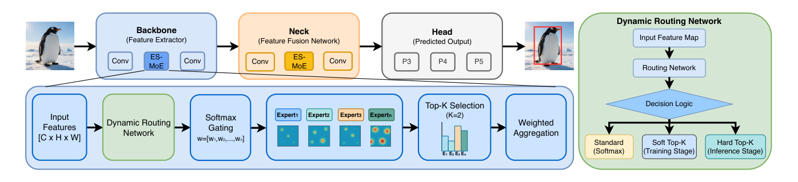
左上：骨干与颈部插入 ES-MoE 的 Backbone-Neck-Head 主干通路；左下：ES-MoE 内部信息流；右侧：动态路由网络在标准 Softmax、软 Top-K（训练）与硬 Top-K（推理）三种决策逻辑间切换。
| X ∈ ℝC×H×W | 输入特征图，C、H、W 为通道数、高与宽 |
| E / gi(·) | 专家总数 / 第 i 个专家的门控函数 |
| TK / Norm(·) | top-K 专家索引集合 / 稳定聚合特征的归一化操作 |
直观上，每个输入只为自己「点名」少数最匹配的专家：简单输入路径短，复杂输入容量大。
这等价于用路由权重对一组多尺度滤波器做凸组合，比单一固定核卷积块更能自适应地聚合不同空间范围的上下文。
门控因此在骨干与颈部的高分辨率特征图上都能高效运行，随后交给分阶段路由策略完成专家选择。
Λ = [2.1, 0.9, 0.3, −0.5] → Softmax 得 Ω′ ≈ [0.65, 0.20, 0.11, 0.05] → 掩码 top-2 并重归一化 → Ωtrain ≈ [0.77, 0.23, 0, 0]：只有两个专家参与聚合，路由依然可微、可学习。
118k 图
80 类
16.5k 图
20 类
6.5k 图
10 类
7.5k 图
3 类
8.2k 图
1 类
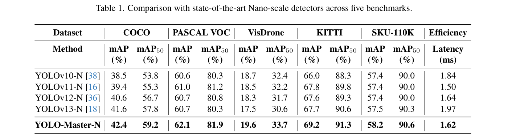
YOLO-Master-N 在全部五个数据集上同时取得最高的 mAP 与 mAP50；增益最大的 VisDrone +2.1%、KITTI +1.5%，可见自适应专家路由对小目标检测与精确定位的收益最明显；在平均 147 个目标/图的 SKU-110K 上取得 58.2% mAP，密集拥挤场景下专家特化依然有效。
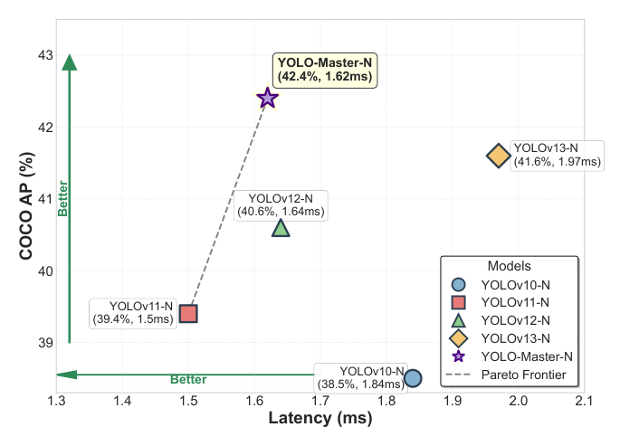
YOLO-Master-N 位于 Pareto 前沿左上角（42.4% AP @ 1.62 ms）：比 YOLOv13-N 快 17.8%，仅比最快的 YOLOv11-N 慢 8%——精度提升没有以牺牲实时性为代价。
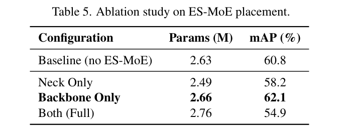
仅骨干 62.1%（+1.3%）；仅颈部 58.2%；双处插入 54.9%
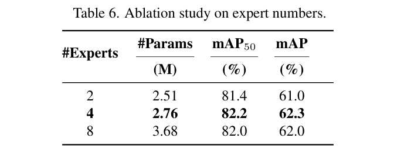
4 专家 62.3%（2.76M）；2 专家 61.0%；8 专家 62.0% 且参数 +33%
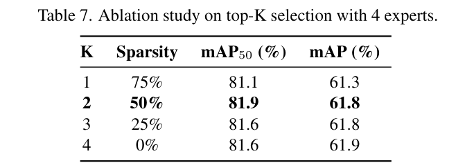
K=2 在 50% 稀疏度下最优（61.8%）；K=1 表征不足低 0.5%
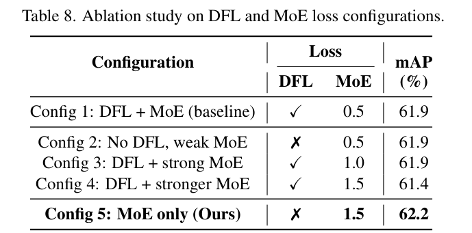
Config 5（无 DFL、仅权重 1.5 的 MoE 损失）62.2% 最优
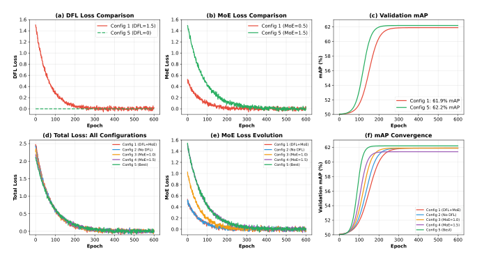
Config 4（DFL + 强 MoE）的损失曲线大幅振荡，Config 5（MoE-only）平滑收敛：DFL 强制的均匀分布精炼与 MoE 损失鼓励的实例自适应专家特化存在梯度竞争，移除 DFL 后 MoE 损失同时承担回归引导与专家特化，训练更稳定。
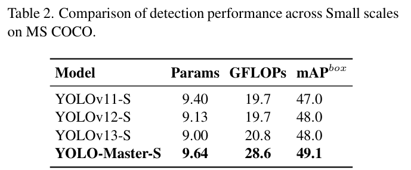
检测（COCO S）：49.1% mAP，超 YOLOv13-S 的 48.0%
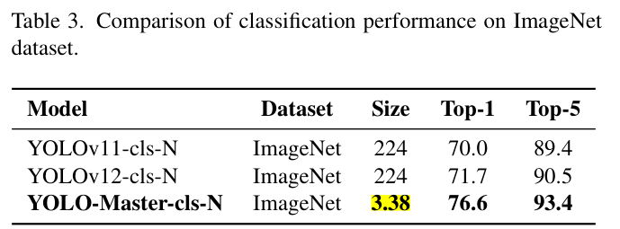
分类（ImageNet）：Top-1 76.6%，比 YOLOv12-cls-N 高 4.9%
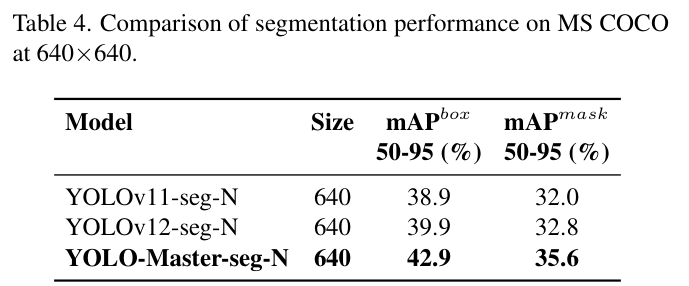
分割（COCO）：mAP mask 35.6%，比 YOLOv12-seg-N 高 2.8%
检测、分类、分割三个任务的一致增益表明 ES-MoE 学到的骨干表征具备跨任务通用性。
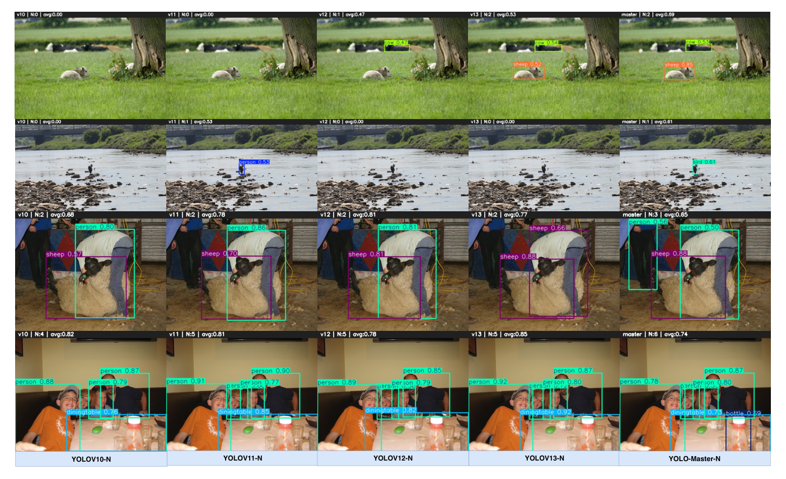
① 草地小动物：v12 置信度仅 0.47，YOLO-Master-N 达 0.65-0.82；② 海岸伪装：v10-v12 漏检遮挡目标，本文精准定位；③ 剪毛场景：平均置信度 0.85（v13 为 0.77）；④ 密集餐桌：以 0.87-0.97 的高置信度补全大量被漏检的小物件——尺度自适应路由的优势能稳定迁移到真实画面。
范式创新——把混合专家条件计算引入实时目标检测，将静态的精度-效率权衡改造成按输入复杂度动态分配表征容量的可微机制，小目标与密集场景受益最明显（VisDrone +2.1%、KITTI +1.5%）。
设计干净利落——软/硬 Top-K 分阶段路由：训练期掩码重归一化保住梯度流动，推理期严格稀疏换来真实加速；门控开销与分辨率无关，条件计算在 Nano 级模型上真正可部署。
消融有指导意义——仅骨干放置 ES-MoE 最佳、双处插入因路由梯度冲突反而退化；MoE-only 损失替代 DFL 有训练曲线佐证；五基准加三类下游任务的覆盖说服力强。